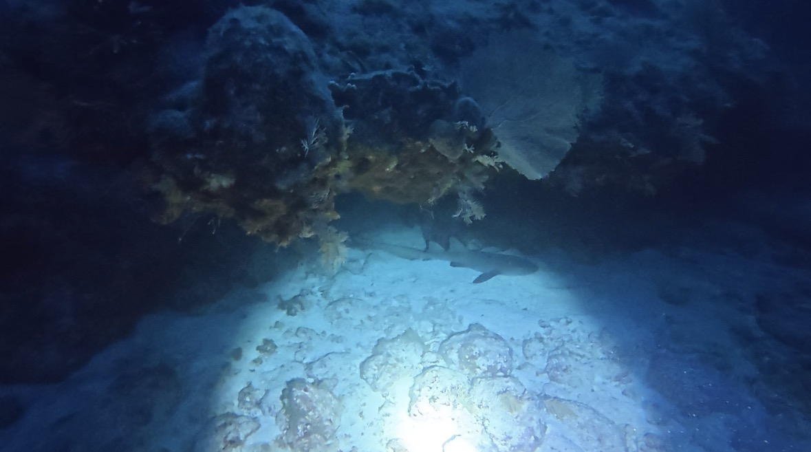
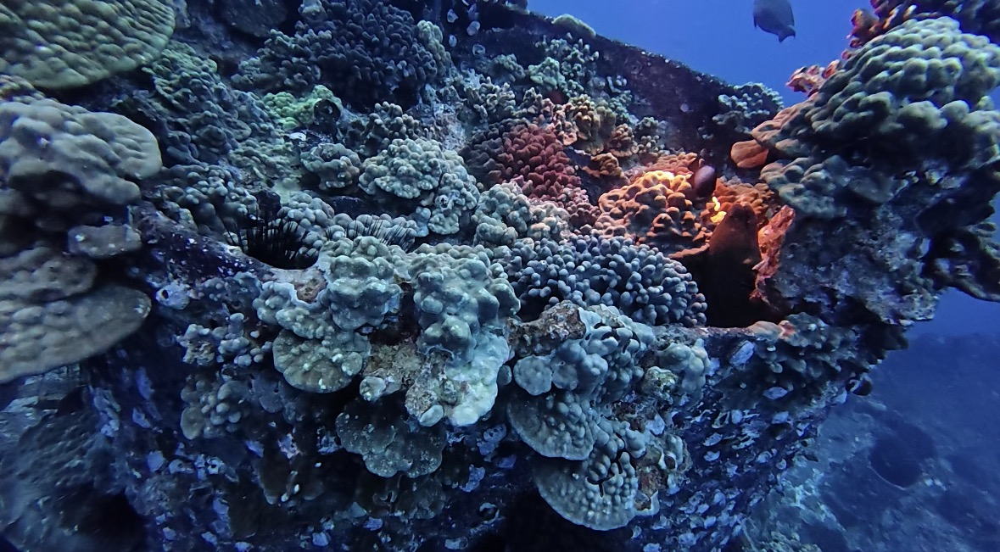
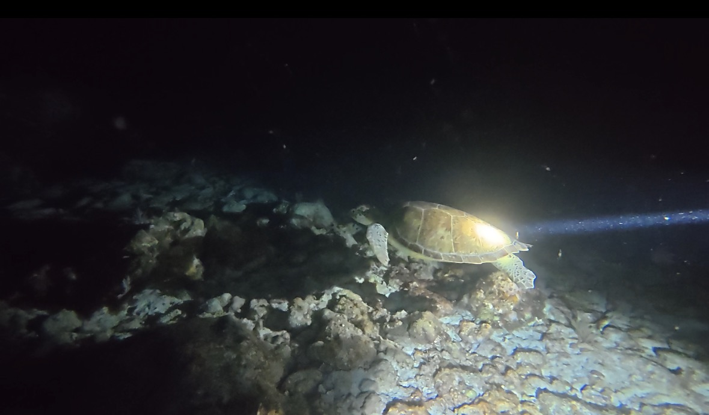
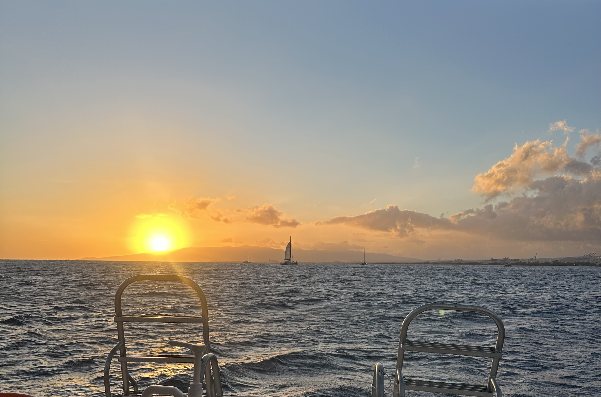
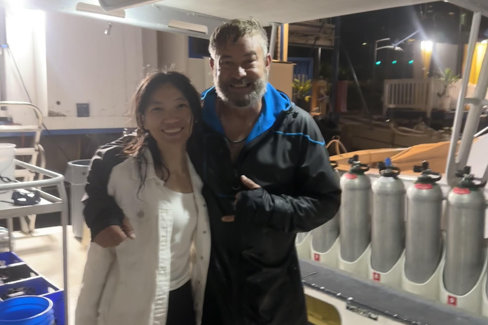

五月底回到快乐老家欧胡岛，开始了为期三天的夜潜训练。这是我人生中的第一次夜潜尝试。我的三次夜潜训练都在欧胡岛南边的Kewalo Pipe潜点，深度大概在15米左右，每一潜都会选择在日落前入水。刚开始下潜时，海底还残留着最后一点阳光，依然能看清珊瑚和礁石的轮廓。大约十分钟后，太阳彻底落山，光线逐渐消失，夜幕降临，夜潜体验才真正开始。整个世界像被人关掉了总开关，只剩下手电筒的光源来划开海底的黑暗。
海洋有自己的昼夜
第一次夜潜给我留下了三个最直观的印象：海洋生物的变化、视野的缩窄，以及方向感的迷失。
从白天切换到夜晚， 即便是同一个潜点，也会变成完全不同的样子：白天活动的鱼群躲进礁石睡觉，而白天几乎不会露面的章鱼、龙虾、螃蟹还有鳗鱼却纷纷开始活动。
第二个变化来自于视野。白天潜水的时候，总感觉深蓝的海洋辽阔得没有边界。而到了夜晚，我的世界被压缩成了手电筒前方几米远的光束，光圈之外的一切都隐没在黑暗里。但这种视野限制并没有让我感到压迫。我原本以为黑暗会放大恐惧，但夜潜真正放大的是探索感，让我更加专注于眼前。还有一个和预想完全不同的地方：夜潜反而更不容易和潜伴走散。白天潜水需要不断留意寻找彼此的位置，而到了晚上，只要看到身边的手电光，就知道潜伴在哪里。
真正让我不适应的其实是方向感。没有远处的参照物，我很容易失去空间感。抬起头只能看见四周一片漆黑，低头看也只有手电照亮的一小块海底。我会比白天更加频繁地确认深度、免减压停留时间、残留气压和潜伴的位置。
夜晚的大海藏着另一片星空
夜潜训练里有一个我特别喜欢的环节：教练会示意我关闭所有光源，然后一瞬间整个世界彻底变得漆黑。没有手电，没有潜水电脑的背光，也没有任何可以依赖的光线。我和教练坐在 15 米深的沙地上，静静等待眼睛适应黑暗。这项训练的目的是确认我们在完全黑暗的环境里，依然能够稳定控制自己的中性浮力。在黑暗中静坐的三分钟里，当我伸出手在海水中轻轻挥动时，周围会亮起了一点点银白色的微光，后来我才得知这是受到扰动后发光的浮游生物。我开始不停地挥动双手，看着它们在黑暗中划出一道道短暂的光轨。每挥动一次，就会亮起一片；停下来，它们又迅速消失，重新融入黑暗。
那一刻，我突然觉得，像有人把银河搬进了海里。
后来每次想起第一次夜潜，我最先想到的都不是章鱼、龙虾，也不是黑暗本身，而是那片只存在了几秒钟的微光。
第一次失控上升：“我是谁，我在哪”
最后分享一个这次夜潜训练中的惊魂小插曲。
夜潜第一天教练给我的配重比平时多了两磅（我平时穿 3mm 湿衣通常带 6 磅，而那天带了 8 磅），下水后才发现我的中性浮力一直不稳定。在海底的时候身体总是不受控制地往下沉，很多时候不得不用手撑住海底，才能重新调整自己的姿态（那段时间我脑子里一直在想另一件事：千万别按到海胆lol）。
为了避免误触海胆和珊瑚，我开始尝试用 BCD 微调浮力。而在给 BCD 补了一点气后意外发生了，我的身体开始快速上升，而且越来越快，潜水电脑已经开始疯狂报警。整件事情发生得太快了，人在真正紧张的时候大脑不会自动播放教练上课时讲过的内容，况且我的身体和感官在当时还并未完全适应黑暗。理性上我知道应该马上泄掉 BCD 里的空气，但慌乱之中我甚至不知道应该按哪个按钮。那几秒钟里我脑子里只剩下一件事：保持呼吸。其他所有在开放水域训练里学过的动作都像突然消失了一样。我一边持续呼气，一边抬头确认上方有没有船只，眼睁睁地看着教练手电筒的光越来越远，而我则一路从 15 米深度直接冲出了水面。
船长第一时间发现了我。大约两分钟后，教练也浮出了水面。他看着我第一句话就是："Are you okay?"。幸运的是这次失控上升没有造成任何伤害。我深吸了一口气确认肺部没有扩张损伤后告诉他我可以继续下潜。
后来复盘这次经历时，我才真正理解为什么教练会反复让我可以练习那些看似简单的动作。平静的时候，每个人都知道正确答案。真正决定安全的，是当事情发生时身体是否已经根据肌肉记忆替大脑做出了反应。
由于在欧胡岛的三次夜潜都是training dives，我不能带DJI相机下水。在这里就贴几张后来我的佛州Key Largo Molasses Reef的夜潜照片吧。

刚开始夜潜就在礁石下发现一只正在睡觉的护士鲨 [Molasses Reef]

躲在珊瑚礁里的海鳗 [Molasses Reef]

夜潜快要结束时一只海龟从身边游过 [Molasses Reef]

每一潜都是夕阳下山之前入水 [Oahu]

我和我的教练Roger在最后一次夜潜结束后的合影 [Ouhu]